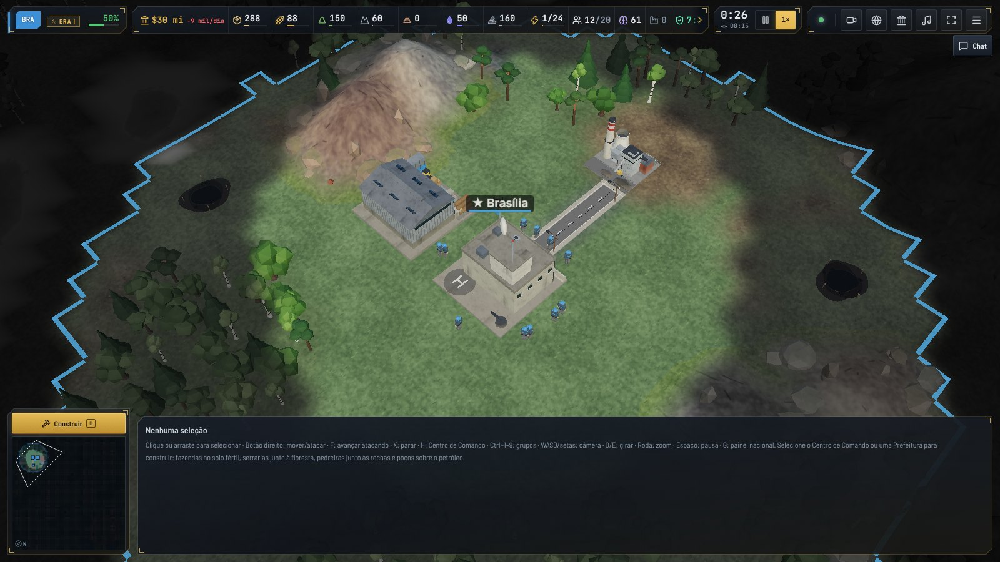
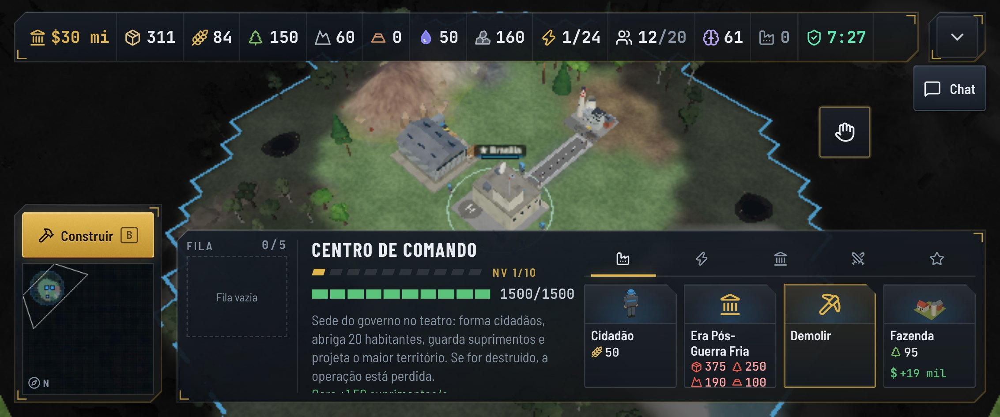

Sala de Situação · proposta de 21/11
HUD compacta: antes e depois
Mesma partida e mesma câmera. A porcentagem é quanto da tela a interface cobre (medida em 1.500 pontos da tela).
Computador · nada selecionado

Hoje{{A_PC}}%
 Proposta{{B_PC}}%
Proposta{{B_PC}}%
Celular · Centro de Comando selecionado

Hoje{{A_CEL}}%
 Proposta{{B_CEL}}%
Proposta{{B_CEL}}%